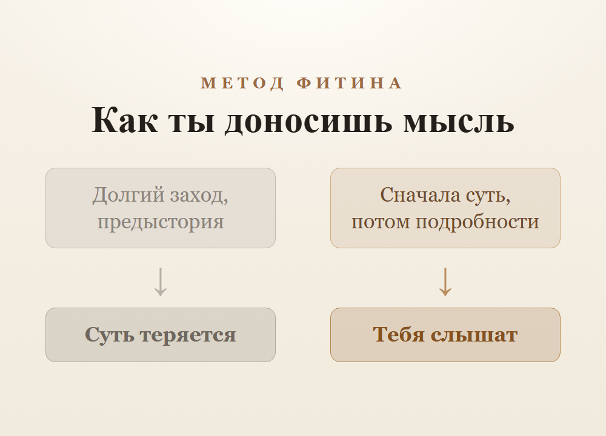
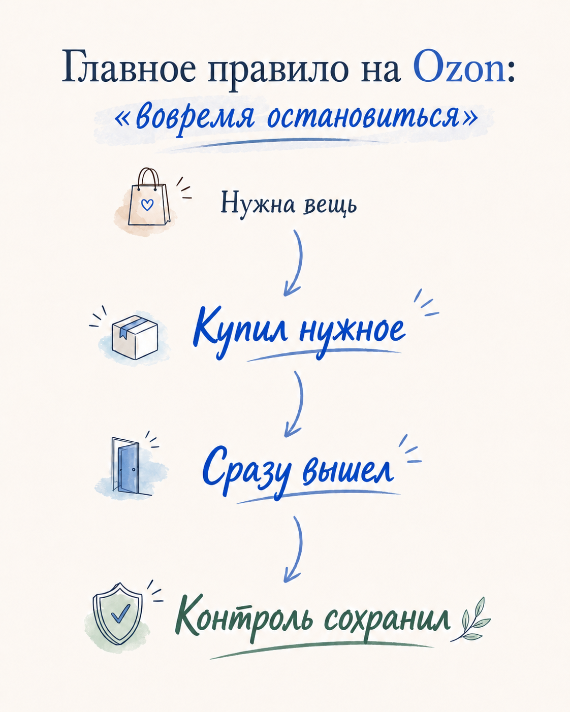

Это черновики постов. Если найдётся минута — прочитайте и скажите, что думаете:
что зацепило, а что показалось длинным, скучным или непонятным, что хочется поправить.
Любое мнение поможет сделать тексты живее.
Почему нам так трудно просить о помощи
Пост · вне плана · понять себя · просить о помощи · лаконичный стиль · ред. 2 (последняя)
Последняя редакция: 22.06.2026
Доходит до смешного: тащишь тяжеленную сумку один, рядом близкий человек — а ты «да я сам». Плохо на душе неделями — а на «как дела?» отвечаешь «нормально». Попросить вслух почему-то стыднее, чем мучиться молча.
И дело не в скромности. Под этим обычно прячется тихий страх: если попрошу — стану обузой. Покажу, что не справляюсь. А вдруг откажут — и будет совсем горько. Проще не просить вовсе: так хотя бы не отвергнут.
Вот только за это «я сам» приходится платить. Человек годами тянет всё на себе, каменеет, выгорает — и при этом всё сильнее одинок. Странно: вокруг люди, которые любят, а он один на один со своим грузом. Потому что сам же их и не подпустил.
А теперь посмотри с другой стороны. Вспомни, когда помогали тебе — или когда ты сам выручил кого-то. Стал ли тот человек для тебя «обузой»? Наоборот: когда нам доверяют свою трудность, мы чувствуем, что нужны.
Значит, отказываясь просить, ты не щадишь близких — ты лишаешь их этого. Не даёшь им побыть нужными. Несёшь сам и думаешь, что это благородно, — а на деле держишь их на расстоянии.
Просить — это не слабость. Это доверие. Ты будто говоришь: «Ты мне важен, и я не боюсь показаться тебе настоящим».
Трудно начать — начни с малого. Не «спаси меня», а просто: «помоги донести», «побудь со мной, мне сейчас тяжело». Маленькая просьба — и увидишь: мир не рухнул, а стало теплее.
И когда в следующий раз с языка сорвётся «я сам» — задержись на миг: правда хочешь справиться один, или просто боишься побеспокоить? Может, рядом есть тот, кто был бы только рад, что ты обратился.
«Поживу потом»: как мы откладываем жизнь на завтра, которого нет
Пост · вне плана · большие вопросы · отложенная жизнь · лаконичный стиль · ред. 2 (последняя)
Последняя редакция: 22.06.2026
Знакомо: вот закончу проект — тогда отдохну. Вот накопим — съездим. Вот дети подрастут, вот станет полегче — вот тогда и заживём по-настоящему. А пока потерпим. И так годами: настоящее всё время как будто черновик, а «настоящая жизнь» где-то впереди, на чистовике.
Только «потом» не приходит. Кончается один проект — начинается другой. Накопили — появились новые траты. Подрос ребёнок — новые заботы. Условие, после которого «можно начинать жить», всё время отодвигается. А дни, которые ты пометил как черновик, — это и была жизнь. Других не выдадут.
Почему мы так делаем? Кажется, что сейчас «не считается» — слишком обычное, будничное. Настоящее должно быть особенным: большим событием, идеальными условиями. А раз сегодня всё буднично — значит, ещё не оно.
А подмена вот в чём. Жизнь — это не редкие вершины. Это как раз будни, из которых она почти вся и состоит. Ужин с близкими, дорога домой, обычный вечер — это не «между жизнью», это она и есть.
И счастье — не приз в конце пути, а умение заметить то, что уже идёт прямо сейчас.
Не нужно бросать цели — нужно перестать ставить жизнь на паузу до их достижения. Сегодня вечером сделай одно живое дело не «на потом»: позвони тому, кому давно хотел. Пройдись без спешки. Побудь с близкими не между делом, а правда рядом, отложив телефон.
А иногда лови себя на мысли: что я откладываю до лучших времён — и точно ли они наступят? Многое из того, чего ты ждёшь, можно начать в маленьком виде уже сегодня.
Почему самое злое и раздражённое достаётся самым близким
Пост · вне плана · отношения · срываемся на близких · лаконичный стиль · ред. 3 (последняя)
Последняя редакция: 26.06.2026
Странная вещь: с чужими мы вежливы. Коллеге улыбнёмся, незнакомцу уступим, с клиентом — сама любезность. А дома, с теми, кого любим больше всех, можем рявкнуть на ровном месте, ответить резко, сорваться из-за ерунды. Самое тёплое — посторонним, самое колючее — родным. Почему так?
Объяснение неприятное, но честное: на близких мы срываемся как раз потому, что они близкие. С чужим надо держать лицо — он может уйти, осудить, ответить. А родной никуда не денется, он свой, он простит. И мы, не замечая, сбрасываем на него всё, что накопили за день: усталость, обиду, раздражение, которое не выплеснули там, где было нельзя. Дом становится местом, где можно наконец «не сдерживаться».
Тут и кроется ловушка. Мы путаем безопасность с вседозволенностью. То, что человек тебя любит и терпит, не значит, что об него можно вытирать ноги. Наоборот: раз он ближе всех — ему и больнее всего от твоего тона. Чужому твоя резкость мелочь, забудет к вечеру. Близкому — царапина, которая копится годами.
За привычным «да он поймёт» легко не заметить, как именно тех, кто терпит, мы и раним сильнее всех.
Что делать? Не «стать идеальным» — совсем не раздражаться невозможно, да и незачем. А нужно куда проще: пара честных шагов в нужный момент. Чувствуешь, что вот-вот сорвёшься на своём, — притормози и скажи правду вслух: «Я не на тебя злюсь, я устал, дай мне десять минут». Честно — и сразу гасит напряжение. А если сорвался, не молчи из гордости: «прости, я был неправ». Близкому такое короткое «прости» лечит обиду сильнее, чем кажется.
И честно прикинь: кому достаётся твоё лучшее — а кому остатки? Если чужим улыбка, а родным то, что осталось, — пора это разворачивать обратно.
«А что подумают люди» — как чужое мнение тихо управляет твоей жизнью
Пост · вне плана · совесть и ценности · чужое мнение · лаконичный стиль · ред. 2 (последняя)
Последняя редакция: 22.06.2026
Хотел одеться попроще — передумал: вдруг решат, что опустился. Мечтал сменить профессию — испугался: что скажут, в сорок-то лет. Даже радость порой глушишь: неудобно, у других хуже. Вроде жизнь твоя и решения твои — а где-то на заднем плане всегда сидит невидимый зал, перед которым ты отчитываешься. И ты вечно подгоняешь себя под его взгляд.
Откуда это? Не от глупости. Человеку важно быть принятым — это древнее, когда-то от «свой-чужой» зависела жизнь. Но сегодня этот сторож часто срабатывает вхолостую: ты боишься осуждения людей, которым до тебя, по правде, почти нет дела.
Теперь о неприятном. Тот «зал», ради которого ты стараешься, не существует. Люди не думают о тебе и трети того, что ты воображаешь, — у них своя жизнь, свои тревоги, свой такой же невидимый зал. Чужое мнение, под которое ты подстраиваешься, — чаще всего просто твоя догадка о нём.
Получается, ты живёшь не по чужой воле даже — а по собственному страху чужой воли.
Это не значит «плюнь на всех»: мнение близких и голос совести важны. Важно различать. Спроси себя: я не делаю этого, потому что это правда нехорошо — или потому что боюсь показаться кому-то смешным? Первое слушай. Второе отпускай.
Начни с малого: один раз поступи так, как считаешь правильным сам, а не как «принято». Маленький выбор против «а что подумают» — и увидишь: небо не упало.
И напоследок один честный вопрос: чьим мнением ты сейчас живёшь — и стал бы этот человек ради тебя менять свою жизнь так, как меняешь её ради него ты?
Друг, который всегда рядом — но которого нет
Пост · тема №31 · флагман-отстройка · Человек и ИИ
Последняя редакция: 17.06.2026
Замечал за собой такое? Вечером устал, на душе муторно, хочется поговорить — а открываешь не человека, а чат с нейросетью. И с ней хорошо: выслушает, не перебьёт, не осудит, ответит спокойно. А с живыми так почему-то не выходит.
А легче с ботом по простой причине: с ним не страшно. Он не отвернётся, не обидится, не скажет «отстань, некогда», не разболтает твоё другим. С живым человеком так не бывает — там всегда есть риск, что не поймут, заденут, уйдут. Вот мы и тянемся туда, где не больно. Это по-человечески, стыдиться тут нечего.
Но дальше начинается то, чего сразу не видно. Чем больше общаешься с тем, кто в принципе не может тебя ранить, тем труднее становится с живыми. Отвыкаешь, что человека иногда надо потерпеть, что он бывает не в настроении, может не понять с первого раза. Живой разговор начинает казаться слишком хлопотным — проще к экрану. И вот человек уже почти не звонит, не пишет, в гости не заходит. Сначала с людьми неловко, потом тяжело, а потом будто и незачем.
И здесь — самое главное. Кажется, что одиночество ушло: есть же с кем «поговорить». Но бот не может тебя любить, не скучает по тебе, сам о тебе не вспомнит, не придёт, когда тебе плохо. Он отвечает — но его нет. Боль одиночества он приглушает, а само одиночество от этого только растёт, просто ты перестаёшь его замечать.
При этом нейросеть — не враг, и бросать её не нужно. Как помощник она отличная: разобраться в вопросе, привести мысли в порядок, успокоиться, когда сам себя накрутил. Дело не в том, чтобы от неё отказаться. Дело в том, чтобы не давать ей занять место живых людей.
Проверить себя просто. После разговора с нейросетью спроси: мне стало легче пойти к живым — позвонить, встретиться, что-то сделать? Или, наоборот, ещё сильнее захотелось спрятаться от всех за экраном? Если первое — она помогла. Если второе — она потихоньку превращается из помощника в способ убежать от жизни.
Что с этим делать — спокойно, маленькими шагами:
Раз в день — один живой контакт, пусть даже короткий и неловкий. Написать знакомому «как ты, сто лет не виделись», позвонить родителям просто так.
Спросить кого-то не про дела, а как у него на самом деле — и правда выслушать, не торопясь ответить.
Там, где привычнее экран, иногда выбирать живое: не написать, а зайти; не переписываться, а встретиться.
Поначалу будет непривычно, может, даже не по себе. Это нормально. Живое общение — как мышца: без нагрузки слабеет, но и восстанавливается, если потихоньку её нагружать.
А оставишь как есть — дальше будет только глуше: чем дольше прячешься за экраном, тем страшнее кажутся живые и тем острее одиночество. Будешь каждый день делать хоть один шаг навстречу людям — со временем с ними снова станет тепло и просто.
Когда чужой успех колет, а не радует
Пост · вне плана · понять себя · зависть · бот + финальная шлифовка
Последняя редакция: 20.06.2026
Бывает так. Видишь, что у знакомого всё пошло в гору: купил квартиру, открыл своё дело, у него семья, путешествия, его хвалят. И вместо того чтобы порадоваться, внутри что-то сжимается. Маленький такой укол. И сразу хочется найти, к чему придраться: да ему повезло, да у него связи, да наверняка не своим горбом. А потом становится стыдно — что же я за человек, радоваться чужому не могу.
А стыдиться тут нечего. Зависть не значит, что ты плохой или мелкий. Это знакомо почти каждому: у кого-то сильнее, у кого-то едва заметно — и не каждый себе в этом признаётся. И, если приглядеться, она вообще не про другого человека.
Что за ней стоит
Когда колет от чужого успеха — это не злость на него. Это боль за себя. Тихое чувство: а я-то отстал. Я так не смог. Мне уже поздно, у меня не получится, я этого не достоин.
Другой человек тут просто зеркало — он показал тебе то, чего ты сам хочешь, но боишься себе признаться.
Как это устроено внутри
Ты смотришь на чужой успех снаружи: вот результат, вот готовая картинка. А на себя смотришь изнутри — со всеми своими сомнениями, неудачами, незаконченными делами. И сравниваешь его витрину со своим черновиком. Конечно, проигрываешь.
И чем больше кажется, что тебе самому так не суметь, тем сильнее жжёт. А когда жжёт невыносимо, проще не признать «я тоже так хочу», а обесценить: да ничего особенного, ему просто повезло. Так легче. Только легче ненадолго.
Что мы тут путаем
Нам кажется, что зависть рассказывает что-то про другого: заслужил он или нет, сам добился или по блату. А она про тебя.
Зависть — это стрелка, которая показывает прямо в то, чего ты хочешь и не делаешь. Завидуешь чужому делу — значит, и тебе хочется заниматься чем-то своим, по душе, а ты не решаешься или застрял не на том. Завидуешь чужой семье — значит, тебе не хватает тепла.
Зависть — это не приговор тебе. Это подсказка.
Что с этим можно сделать
Не давить её в себе и не грызть себя — а прочитать.
Честно скажи себе, чему завидуешь. Спроси прямо: чего именно я хочу? Не «он плохой», а — я хочу того же. Уже от одного этого жжёт меньше, потому что ты больше не прячешь это от себя.
Отдели своё желание от сравнения. Перестань мерить себя чужим шагом. У него своя дорога, свой возраст, свои стартовые условия, которых ты не видишь. Тебе не нужно его обгонять. Тебе нужно понять, куда хочешь сам.
Сделай один маленький шаг к тому, чему завидуешь. Не чтобы кого-то перегнать — а просто чтобы сдвинуться. Завидуешь его делу — начни хоть с малого в своём. Завидуешь его форме — выйди сегодня на двадцать минут пройтись.
Зависть, которая превратилась в шаг, перестаёт быть ядом.
Что дальше
Зависть, которую прячешь, копится и превращается в глухую злость на людей. А зависть, которую читаешь как подсказку, перестаёт колоть и становится указателем — куда тебе самому идти.
Так что в следующий раз, когда кольнёт, не ругай себя. Тихо спроси: чему именно я сейчас завидую — и чего на самом деле хочу сам, но пока не решаюсь?
Когда мама растит сына одна: как любовь не превратить в ловушку
Статья · вне плана · свободная тема · воспитание сына · чувствительная, бережный тон
Последняя редакция: 10.08.2026
СутьЛюбить сына — не значит ограждать его от каждой трудности. Помощь должна помогать сыну взрослеть, а не делать за него то, с чем он уже может справиться сам.
Растить сына одной — тяжело. Большая часть забот часто ложится на маму: нужно заработать, накормить, воспитать, пожалеть и вовремя проявить строгость. И нередко мама боится: мальчик растёт без отца, значит, я должна дать ему за двоих — и заботы, и любви, и защиты. Стараясь восполнить сыну всё, чего, как ей кажется, ему не хватает, мама может незаметно начать делать за него то, с чем он уже способен справляться сам. Так забота постепенно превращается в лишнюю опеку.
Лишняя опека связана не с тем, что мама воспитывает сына одна. Многие женщины в одиночку вырастили самостоятельных, сильных и добрых мужчин. Важно другое: помогает ли забота сыну взрослеть или не даёт ему учиться самостоятельности.
Поначалу это выглядит как большая забота. Мама старается оградить сына от каждой трудности: сложное делает за него, от болезненного оберегает, в конфликт вмешивается сама. Сын становится центром её жизни. Порой она делится с ним взрослыми горестями, советуется и ждёт поддержки, которую обычно ищут у другого взрослого. Всё из любви — чтобы он не чувствовал, что чего-то лишён.
Если взрослые постоянно ограждают ребёнка от трудностей и решают их за него, ему может быть трудно научиться справляться самостоятельно. Зачем учиться завязывать шнурки, если завяжет мама. Зачем мириться с пацанами во дворе, если мама придёт и разберётся. И есть риск, что сын вырастет внешне взрослым, а внутри будет ждать, что за него решат, подстрахуют и всё устроят. Его просто не научили действовать иначе.
Здесь заботу легко спутать с лишней опекой. Мама действительно любит и бережёт сына, но постоянная помощь постепенно лишает его самостоятельности. Сама по себе забота, помощь и нежность не вредят. Проблема начинается, когда взрослый делает за ребёнка то, с чем он уже мог бы справиться сам. Любовь готовит к жизни и понемногу отпускает; когда ею управляет страх, отпускать труднее. Со стороны забота и лишняя опека могут быть похожи, но действуют на ребёнка по-разному.
Два пути заботы
Когда забота мешает взрослеть
Мама старается уберечь сына от трудностей
Делает за него то, что ему уже по силам
Сын не учится справляться сам
Привыкает ждать, что всё решат другие
Самостоятельность развивается медленнее
Когда забота помогает взрослеть
Мама видит, с чем сын уже может справиться
Даёт ему сделать это самому
Позволяет ошибиться и исправить ошибку
Сын получает собственный опыт
Учится принимать решения и отвечать за них
Последствия особенно заметны, когда сын становится взрослым. Ему бывает непросто принимать решения и отвечать за них, потому что раньше это часто делал кто-то другой. Строить свою семью тоже нелегко: трудно поддерживать близких, если привык, что опекают тебя; отношения осложняются и тогда, когда мама продолжает вмешиваться. Сам сын может не понимать, почему самостоятельная жизнь даётся ему так тяжело. Со временем и мама замечает, что ему трудно решать и отвечать за себя. Так бывает не в каждой семье. Но если мама видит это вовремя, она может постепенно перестать решать за него и чаще давать ему действовать самому.
Посмотри на сына как на будущего взрослого: умеет ли он трудиться, принимать решения и отвечать за них? Или пока живёт на готовом, прячется в телефоне, а трудности за него решают другие? Этот вопрос помогает увидеть, чему ещё важно его научить. Однажды он может стать мужем и отцом, и домашние привычки войдут вместе с ним во взрослую жизнь.
Что делать? Не отдаляться от сына и не становиться резко строгой. Продолжать любить, но менять саму помощь: поддерживать там, где он пока не справляется, и отступать там, где уже может сам. Несколько простых шагов:
Не делай за сына то, что он уже может сам: пусть завязывает шнурки, собирает портфель, позже сам решает детские ссоры, зарабатывает первые деньги. Трудность по силам — не жестокость, а тренировка.
Позволяй ошибаться и самому исправлять последствия. Не собрал портфель к урокам — не исправляй это за него в последний момент. Пусть сам объяснит учителю, почему не готов, а вечером соберёт портфель на следующий день. Так он на собственном опыте увидит, зачем отвечать за свои дела.
Не жди от сына той поддержки, которую обычно ищут у взрослых. Пока он ребёнок, ему трудно быть маминым советчиком и утешителем. Пусть рядом с тобой будут взрослые, с которыми можно поделиться тревогами, посоветоваться и почувствовать поддержку. Тогда сыну не придётся отвечать за мамино состояние — он сможет взрослеть в своём темпе.
Пусть рядом будут взрослые мужчины: дед, дядя, тренер, хороший учитель. Сыну важно видеть, как мужчина трудится, выполняет обещания, заботится о близких и отвечает за свои решения.
Отпускай постепенно, по возрасту: чем старше сын, тем больше доверяй ему решать и отвечать самому. Отпускать — не бросать, а доверять по силам.
Эту мысль хорошо передаёт реальная история мамы, которая одна растила сына. Когда в магазине он просил купить понравившуюся вещь, она не стыдила его и не отмахивалась, а спокойно объясняла:
«Сейчас денег на это нет. Чтобы мы могли покупать еду, одежду, вещи для дома и что-то для тебя, я работаю и зарабатываю деньги. Но наша семья держится не только на моей работе. У тебя тоже есть своя часть: учиться, отвечать за свои дела и помогать мне по дому. Когда каждый делает то, что ему по силам, мы вместе создаём возможность покупать необходимое, а иногда — и то, что нам хочется».
Так мама помогала сыну увидеть связь между трудом и теми благами, которыми пользуется семья. Её вклад — работа, заработок и забота о доме. Его вклад — учёба, самостоятельность и посильная помощь. Эти части не равны по тяжести, потому что взрослый отвечает за обеспечение семьи. Но сын уже не чувствует себя только получателем: он понимает, что тоже участвует в общей жизни.
Поэтому разговор в магазине был не только об отказе и не только о деньгах. Мама показывала сыну: за каждой покупкой стоит труд, семейные возможности не безграничны, а общее благополучие зависит от участия каждого.
Возраст сына меняет не цель, а то, что именно мама постепенно передаёт ему. Маленькому — простые повседневные дела: самому одеться, собрать свои вещи, убрать за собой; помочь после его попытки, а не сделать вместо него. Подростку — собственные решения и их последствия: не звонить за него учителю, не разбирать каждую ссору, не спасать всякий раз, когда он забыл о своих обязанностях; быть рядом, если ему действительно нужен совет. Со взрослым сыном — не управлять его работой, деньгами и отношениями, не устраивать его жизнь вместо него. Помощь остаётся, но не должна подменять его собственные действия.
Самое главное — удержать тонкую грань. Любить сына — не значит всё делать за него. Беречь — не значит не давать ему взрослеть. Быть рядом — не значит держать его при себе. Настоящая материнская любовь растит сына не для себя, а для жизни. Отпускать сына бывает больно, но так мама показывает, что верит в его силы.
Вырастить самостоятельного сына под силу и маме, которая воспитывает его одна. Сила не в том, чтобы заменить сыну весь мир, а в том, чтобы вырастить человека, которому потом этот мир будет по плечу.
Какое одно дело ты можешь уже сегодня доверить сыну — пусть сделает сам?
Охота ради забавы: что она делает с сердцем
Пост · тема №45 · общество · троянский конь · осторожный тон · правка позиции · ред. 3 (последняя)
Последняя редакция: 22.06.2026
Вернулся человек с охоты довольный, выложил фото: он, ружьё и добыча. Под фото лайки, «настоящий мужик». А кто-то смотрит на этот снимок — и внутри что-то неприятно сжимается. И сказать неловко: ну охота и охота, тысячи так делают, чего лезть.
Оговорюсь: я никого не осуждаю и не клеймлю — среди охотников немало добрых, порядочных людей. Там, где охота кормит — промысел, вековой уклад села или северного края, — разговор особый, и начинать его не мне. Скажу лишь одно, и это про каждого из нас: животное живое и беззащитное, как бы мы это себе ни объясняли. А сегодня — о другом. Об охоте ради забавы: когда нужды в ней нет вовсе — только азарт, трофей на стену, острое чувство. Вот о ней и речь.
Со стороны всё красиво: мужское дело, природа, костёр, друзья. И это правда есть, этого не отнять. Но если присмотреться, в самой сердцевине азарта лежит одна вещь, которую вслух обычно не проговаривают, — удовольствие от власти над беззащитной жизнью. Зверь не может ответить, не может убежать от пули, не понимает, за что. А ты в этот миг — хозяин его жизни и смерти. И этот короткий всплеск, когда нажал и попал, будоражит. К нему привыкаешь, как к любому сильному чувству, — и хочется ещё.
А дальше происходит то, чего сразу не замечаешь. Сердце потихоньку привыкает. То, от чего раньше делалось не по себе, — вид убитого живого существа, — становится сначала обычным, а потом и приятным. Сострадание ведь как огонёк: если раз за разом гасить его ради острого чувства, он тускнеет. И тускнеет не только к зверю. Человек, который привык получать удовольствие от чужой беспомощности, и к людям понемногу начинает относиться чуть жёстче. Не сразу, не резко — но что-то меняется.
Здесь и прячется самообман. Азарт выдают за силу, за мужество: добыл, победил, я могу. А на деле власть над тем, кто не может ответить, — это не сила. Сильному не нужно самоутверждаться за счёт слабого — наоборот, он того, кто слабее, защищает. Власть над беззащитным и сила — это разные вещи, хоть их и легко перепутать.
Особенно это важно, если рядом растут дети. Ребёнок не слушает наши слова — он смотрит, что мы делаем. И когда видит, что отец радуется убитому зверю, считывает простую формулу: кто сильнее, тот и прав, а чужая боль — это весело. А потом мы удивляемся, откуда в детях жёсткость.
И ещё одно, чтобы не было перекоса. Я не говорю, что каждый охотник — жестокий человек. Это и неправда, и обидно для многих хороших людей. Речь о тихом и не сразу заметном: забава, в которой есть радость от чужой беспомощности, понемногу подтачивает в нас сострадание. Это не приговор — это то, что стоит увидеть в себе заранее.
Что с этим делать — не запрещать и не стыдить. А честно прислушаться к себе. Если охотишься — попробуй спокойно, без свидетелей, ответить себе на несколько вопросов:
Что я чувствую в тот самый миг, когда добыча падает, — лёгкую неловкость, будто что-то не то, или азарт и радость?
Зачем мне это на самом деле — ради еды или ради острого чувства и трофея?
Стал бы я делать это так же спокойно, если бы рядом стоял мой ребёнок и смотрел?
Этот разговор — только с самим собой. Но он скажет многое.
И если хочется передать сыну настоящее мужское — передавай не власть над слабым, а другую силу: защитить, выходить раненую птицу, не дать в обиду того, кто не может ответить. Вот это и есть мужество, и дети чувствуют его не хуже, чем азарт.
А как, по-твоему, что на самом деле сильнее в человеке — суметь взять чужую жизнь ради забавы или суметь её пожалеть?
В чём смысл жизни — и почему его не получается «найти»
Пост · вне плана · понять себя · смысл жизни · лаконичный стиль · ред. 2 (последняя)
Последняя редакция: 24.06.2026
Однажды посреди обычного дня — работа, дом, дела по кругу — как током бьёт: а зачем всё это? Ради чего я каждое утро встаю? Ответа нет, а вопрос тихо сидит занозой. Живёшь дальше, но он не уходит.
Мы привыкли искать смысл как ответ — будто где-то есть формула, надо её разгадать, и тогда отпустит. Думаем, читаем умные книги, ждём озарения. А оно всё не приходит. И закрадывается мысль: со мной что-то не так, у других-то смысл, наверное, есть.
Подвох в том, что смысл — не вещь, которую находят, лёжа на диване, и не мысль, которую можно вычислить в голове. Смысл не находят — его проживают. Он появляется там, где ты кому-то нужен и что-то отдаёшь.
Вот почему совет «живи для себя, занимайся только собой» так часто заводит в тупик. Сделал всё для себя — а внутри пусто. Человек устроен наоборот: он оживает, когда выходит за свои пределы. Когда есть тот, ради кого стоит стараться, — ребёнок, близкий, дело, которое кому-то нужно.
Так что если накрыло это «зачем всё?» — не ищи один большой ответ на всю жизнь разом. Спроси проще: кому сегодня от меня стало теплее или легче? Кому я нужен — и кому мог бы стать нужнее? Смысл собирается вот из таких маленьких «ради кого», а не сваливается готовой истиной.
И, может, смысл жизни — не где-то впереди и не в одной великой цели. Он ближе, чем кажется: в тех, ради кого ты встаёшь по утрам. Иногда стоит просто оглянуться — и увидеть, что он у тебя уже есть.
«Мне все должны» — и почему рядом с таким человеком стынет тепло
Пост · вне плана · совесть и ценности · эгоцентризм · лаконичный стиль · ред. 4 (последняя)
Последняя редакция: 24.06.2026
Случается так: тебе помогают — а ты принимаешь как должное, будто иначе и быть не может. Близкий хлопочет, старается — а ты находишь, к чему придраться. Советуют — отмахиваешься: сам разберусь, я лучше знаю. И ты этого даже не скрываешь: уверен, что прав почти всегда, что видишь дальше других. А кто спорит — тот, по-твоему, просто не так умён, как ты, и чего-то недопонял.
Это не всегда злой нрав. Часто человек и не задумывается, почему он такой: характер сложился так с детства, перенялся от родных, прирос привычкой. А быть в центре, чтобы все подстраивались под тебя, оказывается удобно — так чувствуешь себя выше и спокойнее, будто под ногами твёрдая опора.
Вот только опора эта мнимая. Человек, для которого все вокруг — обслуга и фон, остаётся один даже среди любящих. К закрытому на себе ни помощь, ни любовь не пробиваются: их подают — а он не берёт. Ему помогают — он не замечает. Его любят — а он уверен, что так и должны. И те, кто тянулся к нему, понемногу устают тянуться.
А рядом ведь обычно есть тот, кто терпит и заботится, — и получает в ответ одни упрёки да хмурое лицо. Он отдаёт, отдаёт и выдыхается, а назад почти ничего не приходит. И тепло, которое могло бы греть обоих, идёт только в одну сторону.
А разворот вот в чём: тепло приходит не когда мир вращается вокруг тебя, а когда ты сам поворачиваешься к тому, кто рядом. Не «мне должны», а «что я могу для него». Не центр, вокруг которого все обязаны кружить, — а человек, который умеет сказать спасибо и заметить чужую заботу.
Начни с малого — с благодарности. Сегодня скажи искреннее «спасибо» тому, чью заботу привык не замечать, — не дежурно, а назвав, за что именно. Поймай себя на «мне все должны» — и спроси наоборот: а что доброго сделал я? А когда снова потянет бросить «вечно ты всё делаешь не так» — сдержись и лучше заметь, что человек хотя бы старался.
И оглянись: кто рядом любит тебя и терпит — и достаётся ли ему от тебя тепло или только одни остатки и претензии? Иногда вся перемена начинается с простой мысли: я не центр мира, но я и не один — и тот, кто рядом, бесценен. С этого и теплеет — и у него, и, что удивительно, у тебя самого.
Когда твоей добротой пользуются — а отказать ты не можешь
Пост · вне плана · личная боль и выход · доброта и границы · лаконичный стиль · ред. 7 (последняя)
Последняя редакция: 25.06.2026
Тебя зовут на помощь — и ты идёшь. Тащишь, выручаешь, отдаёшь последнее. А в ответ всё чаще не «спасибо», а недовольство: мало, не так, ещё. И сказать «нет» не выходит — будто откажешь, и сразу станешь плохим.
Так устроены мягкие, добрые люди: им проще отдать, чем огорчить. А рядом часто оказывается тот, кто привык только брать. И доброта без границ оборачивается не любовью, а топливом для чужого эгоизма. Ты выгораешь, а тому, кто берёт, легче не становится: он не учится ни ценить, ни справляться сам. Бесконечной уступчивостью ты не спасаешь человека — лишь укрепляешь в нём привычку садиться на шею.
Силой его не переделать. Но у этой связи есть выход — по одному шагу навстречу с каждой стороны.
Что делать тебе:
Перейди от спасания к помощи — по просьбе и по силам. Не делай за человека то, что он может сам, и не бросайся на опережение. Помогай конкретно и ограниченно: «вот с этим помогу, до сих пор» — вместо «решу всё за тебя». Так ты возвращаешь ему ответственность, а себе — силы.
Разреши себе спокойное «нет» — и наполняйся первым. Без вины скажи вслух: «Я тебя люблю, но это делать не буду» или «не сегодня». И каждый день сперва немного — себе: сон, своё дело, тишина. Помогай из того, что осталось, а не из последнего: пустой колодец не напоит никого.
Что делать тому, кто привык брать (если сам он такое не читает — подскажи ему это ты):
Каждый день — одно дело не для себя, а для близкого, своими руками. Маленькое и конкретное: позвонить и спросить: «как дела?»; помыть посуду; что-то починить. Не принять заботу — а отдать.
И каждый день — искреннее «спасибо», назвав, за что именно. Кажется мелочью, но именно благодарность и забота о другом разворачивают человека от «мне все должны» к людям вокруг — и неожиданно возвращают ему и тепло, и вкус к жизни.
Вы не враги — вы две стороны одной связи, и каждый по-своему тянет её в разрыв. Стоит обоим сделать по шагу навстречу — и лёд трогается: один перестаёт выгорать, другой впервые чувствует, что отдавать теплее, чем брать.
А главный вопрос на сегодня прост: на всех у тебя хватает заботы — а на себя самого осталось хоть немного?
Рядом с эгоистом: как не сгореть самому и достучаться до него
Статья · вне плана · личное как общественное · рядом с эгоистом · по душам · ред. 6 (последняя)
Последняя редакция: 26.06.2026
Ты любишь его и помогаешь — а в ответ требования, упрёки, «я лучше знаю». Сказать «нет» страшно, спорить бесполезно: на любой довод — стена. И ты либо тихо выгораешь, либо срываешься, а потом винишь себя.
В лоб его не переломить. Человек, уверенный, что прав на сто процентов, не услышит ни лекции, ни доказательства — гордость закрывает уши раньше, чем ты договоришь. Силой его не переделать. Но выход есть: меняется не он по приказу — меняется то, как устроено ваше общение. А это уже в твоих руках.
Вот что и вправду открывает дверь. Этим давно пользуются хорошие психологи и мудрые люди.
Не доказывай — спрашивай. На «я сам всё знаю» возражать бессмысленно. Зато работает вопрос: «А что тебе самому сейчас помогает?», «Что бы ты попробовал — хоть на три дня?», «Как, по-твоему, будет лучше?». От собственного ответа человек не защищается. Ты не давишь — он сам поворачивает в нужную сторону и чувствует, что решает он, а не ты его загнал в угол.
Лови искру — и не гаси её. Даже погасший, больной, замкнутый человек нет-нет да оживляется: что-то посмотрел, о чём-то заговорил, к чему-то потянулся. Это и есть дверца. Не отмахивайся «не до того» — подхвати, поддержи, дай этим заняться. Смысл возвращается не через «большие истины», а через простое «ты ещё нужен, ты ещё можешь». Дай дело, где он полезен, — и желание жить возвращается вернее любых уговоров.
Ухаживай — но по правилам, а не в рабстве. Помогать слабому и больному надо. Но если он командует, унижает и требует без конца, одним терпением делу не поможешь. Вся загвоздка в том, *как* эти правила ввести: эгоист диктует всё — еду, сон, что срочно, а что нет, — и на любое «нет» отвечает скандалом, придирками, обидой. Спорить с этим бесполезно — только подбросишь дров. Поэтому держи правила не его согласием, а своим спокойствием: не доказывай и не оправдывайся — ровно, без вызова, делай по-своему там, где речь о тебе («поем и подойду», «полчаса отдохну, потом помогу»). На вспышку не отвечай огнём — скандал гаснет, когда не находит ответа. Это не чёрствость, а условие, чтобы один не выздоравливал за счёт того, что другой рядом заболевает нервами. И не тяни в одиночку: где не хватает сил — зови других; где болезнь — туда врача; а где дело не в болезни, а в характере — там мягко возвращай ему ответственность: что человек может сделать сам, пусть делает сам, не кидайся исполнять каждую прихоть.
Иногда дверь открывается, когда помощь принимаешь ты. Странно, но и мы, добрые, часто не умеем брать: человек вдруг сам потянулся помочь, проявил интерес — а мы отмахнулись, не заметили. И упустили миг, когда он впервые повернулся навстречу. Замечай такие движения и принимай — даже неловкие и маленькие. Принять чужую помощь — тоже подарок тому, кто её протянул.
Перестань ждать «спасибо» от того, кто не умеет благодарить. Тебя выматывает не сам труд — а несбывшееся ожидание: ты отдаёшь, а в ответ ни тепла, ни признания. Но требовать благодарности от того, кто на неё пока не способен, — всё равно что просить воды у пустого колодца. Сделай иначе: помогай по совести, как доброе дело перед Богом и собственным сердцем, а не как услугу, за которую он «должен» отплатить. Перестанешь ждать невозможного — и обида, и боль в сердце отпустят. А заодно твоя доброта перестанет быть топливом для его «мне все должны».
Не спасай его от последствий — доверь и отпусти. Ты держишь на себе всё, будто без тебя он рухнет: гасишь за него ссоры, оправдываешь перед другими, доделываешь то, что он забросил, латаешь его долги и обиды. Но именно последствия — когда человек сам разгребает то, что натворил, сам встречает остывшие лица вокруг — и собственная совесть способны его однажды разбудить. В этом и есть его шанс: впервые почувствовать, что за свою жизнь отвечает он сам, ощутить цену тому, что ему давали даром, — и наконец повзрослеть. Вечно спасая, ты этот шанс у него крадёшь, а сам надрываешься. Сделай свою посильную часть с любовью — и отпусти остальное Тому, кто сильнее тебя: Богу, жизни, его собственной совести. Не ты держишь его жизнь. На деле это значит:
— не доделывай за него;
— не гаси его ссоры;
— не оправдывай перед всеми;
— сделал своё — остановись;
— остальное отпусти.
Эта простая мысль снимает с доброго человека раздавливающее «всё на мне» — и впервые возвращает покой.
И это не только про твою семью. Из таких связок — где один берёт, другой выгорает — и складывается общество: уставшие женщины, инфантильные мужчины, дети без тёплого примера. Меняя одну связку, ты чуть-чуть лечишь и всё вокруг.
Не вини себя за то, что не всесилен. Ты не обязан тащить чужую жизнь и не переделаешь того, кто не хочет. Но спокойные вопросы вместо споров, бережно подхваченная искра, спокойное «нет» без чувства вины и умение принять помощь в ответ — этого хватает, чтобы и самому перестать гореть, и дать другому шанс однажды измениться. С этого и начинается выздоровление — его и твоё.
Метод Фитина: как сделать, чтобы тебя наконец поняли
Пост · вне плана · практики · ясность в письме и делах · лаконичный стиль · ред. 5 (последняя)
Последняя редакция: 10.08.2026
СутьНачни с главного — и тебя поймут с первых слов: в письме, в разговоре, в любой просьбе.
П.М. Фитин
Знакомо? Ты что-то объясняешь, просишь, доказываешь — вслух или в переписке, — а человек будто не понимает, чего ты хочешь. Переспрашивает «так что нужно-то?», отвечает не о том. А если это письмо или сообщение — нередко и вовсе не дочитывает.
И дело тут чаще не в том, что мысль плохая. Просто самое главное — свою просьбу, свой вывод — ты приберёг к концу, после долгого захода. А туда человек уже не добрался.
Как не потерять главное за подробностями, больше 80 лет назад хорошо понимал Павел Михайлович Фитин (1907–1971). Он возглавлял советскую внешнюю разведку всю войну, с 1939-го по 1946-й. А до разведки был редактором в издательстве — знал, как человек читает и где теряет мысль. Отсюда его правило для донесений: сначала суть и выводы — потом подробности. Не наоборот. Руководитель открывал документ и с первых строк понимал главное — что случилось, что это значит, что предлагается; а дальше читал уже по надобности. Говорят, этот порядок прижился в разведке надолго.

Метод Фитина: сначала суть, потом подробности
А теперь узнай себя — и попробуй так же:
— В разговоре с близким. Начинаешь с упрёков и издалека — «ты вечно…», «ты никогда…» — и разговор сразу летит в ссору. Скажи спокойно и сразу главное: «Мне важно вот что — потому что…». Тогда тебя услышат, а не заведутся в ответ.
— Ребёнку или подростку. Долгая нотация — он «отключается». Скажи суть: «Мне нужно, чтобы… И вот чем это важно тебе». Дойдёт с первого раза.
— Начальнику. Мнёшься, заходишь издалека — он не вникает. Первая фраза: «Прошу решить вот это, причина — такая». Ответит и решит быстрее.
— В рабочем чате. Пять сообщений подряд — все запутались. Собери в одно: «Проблема такая. Нужно вот что». Никто не переспрашивает.
— У врача. Волнуешься, вываливаешь всё подряд — врач не улавливает главное. Начни: «Больше всего беспокоит вот это, началось тогда-то». Поймёт и поможет точнее.
— В резюме или отклике на вакансию. Начинаешь с «родился, учился, окончил…» — рекрутёр пролистнул, не дочитав. Поставь вперёд, чем ты полезен: «Электрик, 10 лет опыта, без вредных привычек, готов выйти завтра». Вот такое дочитывают — и зовут на собеседование.
Запомнить легко, простая формула:
что главное · почему это важно · что предлагаешь · и уже ниже — подробности
И выручает это дважды. Другого — сразу понять тебя. А тебя самого — яснее думать: пока не скажешь суть одной фразой, ты и сам толком не знаешь, чего хочешь. Поставил главное вперёд — и мысль собралась.
Попробуй сегодня на любом сообщении: не пиши длинный заход — вынеси вывод наверх. Сначала суть, потом подробности. Иногда только этого и не хватает, чтобы тебя наконец услышали.
Диплом подтверждает, что человек учился. Ремесло видно по задачам, которые он способен решить для других.
Можно пять лет ходить на занятия, сдавать экзамены — и только на первом собеседовании впервые спросить себя:
— А какую рабочую задачу я уже могу выполнить самостоятельно?
Не «изучал менеджмент», а могу ли организовать работу? Не «окончил юридический», а способен ли составить договор? Не «знаю программирование», а создам ли программу, которая решит чужую задачу?
Учёба часто проверяет, что человек запомнил. Работа проверяет другое: что он способен сделать в настоящих условиях, где нет ответа в конце учебника.
Хорошие оценки, зачёты и диплом ещё не показывают, готов ли человек работать самостоятельно. Знание становится ремеслом после проверки реальной задачей.
Самому заметить свои пробелы трудно. Студенту может казаться, что он уже умеет работать, а опытный специалист за несколько минут увидит, что придётся переделывать. Поэтому ремеслу нужна внешняя проверка.
Если диплом ещё впереди, попробуй сделать три вещи.
Посмотри на профессию с конца
Открой несколько настоящих вакансий и выпиши повторяющиеся задачи. Не «ответственность» и «умение работать в команде», а конкретные действия: провести занятие, составить договор, сделать расчёт, настроить оборудование, написать программу.
Каждый семестр решай хотя бы одну реальную задачу
Не упражнение ради оценки, а дело, результат которого нужен другому человеку. Это может быть документ, занятие, расчёт, отремонтированное устройство или простая программа.
У такой задачи есть конкретный заказчик, ограничения и результат, который можно проверить.
Показывай работу тому, кто сильнее тебя
Проси не похвалы, а разбора:
— Где ошибка?
— Чего я не заметил?
— Что пришлось бы переделывать в настоящей работе?
Сохраняй удачный результат и исправленную версию. По ним видно, какие замечания ты учёл и чему научился.
Из таких работ складывается портфолио:
Вот задача.Вот что я сделал.Вот результат.Вот что исправил после обратной связи.
На собеседовании эти четыре строки дадут конкретный ответ на вопрос: что вы умеете делать?
Выбери одну профессиональную задачу уже сейчас и найди человека, которому нужен её результат.
Ты зашёл на Ozon за одной вещью — откуда взялись ещё пять?
Пост · вне плана · практики · маркетплейсы и зависимость · лаконичный стиль
Последняя редакция: 10.08.2026
Открыл Ozon купить лампочку. Через двадцать минут в корзине уже органайзер, набор инструментов, подарок «на будущее» и ещё две вещи по акции.
Каждой можно найти объяснение. Всё пригодится. Всё недорого. Доставка завтра.
Но до открытия приложения ты об этих вещах не думал.
Маркетплейс удобен, когда человек приходит с готовым списком. И начинает руководить покупками, когда человек заходит без конкретной цели — посмотреть скидки, отвлечься, поднять настроение.
Товар здесь даёт не только пользу. Сначала появляется желание, затем приятное ожидание посылки, потом короткая радость от покупки. Она проходит — и рука снова тянется открыть приложение.
Постепенно маркетплейс начинает влиять на настроение человека. Устал — полистал товары. Расстроился — заказал что-нибудь. Скучно — пошёл искать, чем ещё улучшить жизнь.

Главное правило на Ozon: вовремя остановиться
Особенно легко потерять меру, когда платить сразу не нужно. Рассрочка и кредит создают ощущение, что вещь уже твоя, а деньги отдашь когда-нибудь потом. Но каждая такая покупка забирает часть будущего дохода. Несколько небольших платежей складываются в сумму, из-за которой снова приходится откладывать действительно важное.
Проверить себя можно по простым признакам:
заходишь в приложение без списка;
находишь «необходимое», о чём до этого не вспоминал;
покупаешь, чтобы порадовать или успокоить себя;
берёшь в рассрочку то, без чего можешь обойтись;
тратишь на мелочи деньги, которые хотел отложить на большую цель;
после заказа ненадолго становится легче, а затем хочется покупать снова.
Эти признаки показывают, в какой момент удобный инструмент начинает управлять вниманием, настроением и деньгами.
Пауза между желанием и покупкой — это место, где человек возвращает себе разум, совесть и цель.
Для небольшой покупки подожди до вечера. Для более дорогой — сутки. Для крупной — несколько дней. За это время первая тяга ослабевает, и становится понятнее: вещь действительно нужна или покупка должна была просто изменить настроение.
Перед входом в приложение составь список. Нет конкретной вещи — не открывай витрину. А деньги от покупки, от которой отказался, переведи на отдельный счёт для большой цели: машины, ремонта, учёбы, семейного запаса. Тогда отказ даст видимый результат, а не останется очередным обещанием себе.
Человеку дана воля выбирать. Это не означает, что у него никогда не возникает лишних желаний. Воля проявляется в другом: человек способен остановиться и решить, как поступить.
Каждый такой выбор имеет продолжение. Если раз за разом подчиняться первому желанию, оно становится привычкой. Привычка постепенно забирает деньги, внимание и способность ждать. В какой-то момент уже приложение определяет, чего человеку захотеть и чем сегодня поднять себе настроение.
А если возвращать паузу, список и большую цель, маркетплейс снова становится тем, чем должен быть: удобным магазином, а не хозяином решений.
Перед следующим заказом задай себе один вопрос:
Мне нужна эта вещь — или я просто хочу с помощью покупки поднять себе настроение?
И если решил купить, то главное — вовремя остановиться:
Купил нужное — сразу вышел.
Ozon: покупка, которая не заканчивается
Пост · вне плана · практики · маркетплейсы и повторные покупки · смысловая публицистика
Последняя редакция: 30.07.2026
Раньше покупка чаще заканчивалась на кассе. Выбрал. Оплатил. Ушёл. В маркетплейсе всё иначе.
Одна покупка легко становится началом следующей. Рядом с нужной вещью сразу появляются похожие товары, рекомендации, скидки, подборки, «с этим покупают», «вам может подойти».
Это уже не просто магазин. Это витрина, которая постоянно продолжает выбор.
Человек может зайти за нужной вещью. Но сталкивается не с одной вещью, а с потоком предложений. И этот поток устроен так, чтобы покупка не завершала действие, а продолжала его.
Сначала один заказ. Потом ещё один. Потом мелочь, которая «пригодится». Потом товар, который «лучше взять сейчас». Каждая покупка кажется отдельной. Но в сумме это уже не отдельные покупки, а привычный канал утечки денег и внимания.
Так по мелочи уходят пенсия, семейный бюджет, деньги на большую цель.
Главная опасность не в одной покупке. Главная опасность — в повторении.
Покупка закончилась, а витрина продолжает работать. Она запоминает, подбирает, напоминает, ведёт дальше. Поэтому решение о лишнем товаре лучше не принимать внутри этой витрины.
Там он стоит не один. Он стоит среди скидок, отзывов, похожих товаров и ощущения выгоды. Вышел из приложения — и товар уже виден иначе. Нужное останется нужным. Лишнее часто перестанет быть нужным.
Первое правило было простым:
Купил нужное — сразу вышел.
Второе правило продолжает его:
Увидел лишнее — выйди до решения.
Потому что маркетплейс силён не одной покупкой. Он силён тем, что умеет превращать покупку в продолжение.